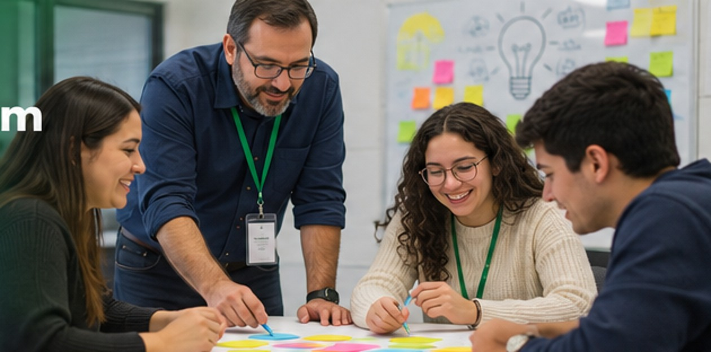

16, 17 y 18 de noviembreSelecciona tu fecha preferida
UNIVERSIDAD DEL VALLE DE GUATEMALA · 2026Formación docente · Innovación educativa
Innovación que empieza con los docentes.
Aprende Design Thinking y Scrum, lleva estas metodologías a tu colegio y acompaña a tus estudiantes en un reto de innovación en 2027.
Una jornada por docente · Cupos sujetos a confirmación
✓ Formación práctica✓ Materiales incluidos✓ Proyecto estudiantil 2027

Imagen ilustrativa · No representa un evento real9:00 a 16:00 hUna jornada de formación
Edificio CIT · Nivel 7Universidad del Valle de Guatemala
Inscripciones hasta el 10/11Confirmación por correo
FORMACIÓN DOCENTE
Dos metodologías, un mismo propósito
Aprender haciendo para acompañar proyectos estudiantiles con sentido.
Design Thinking
Comprender problemas reales y desarrollar soluciones centradas en las personas.
- Empatizar
- Definir
- Idear
- Prototipar
- Evaluar y probar
Scrum
Organizar el trabajo de manera colaborativa, iterativa y adaptable al contexto educativo.
- Product Backlog
- Sprint Planning
- Sprints
- Revisiones y retrospectivas
- Seguimiento del proyecto
Del taller al aula
Después de capacitarse, los docentes guiarán a sus estudiantes de diversificado en el desarrollo de un proyecto durante 2027.
Incluye actividades prácticas, materiales, refacción y almuerzo durante la jornada.
16, 17 O 18 DE NOVIEMBRE
Agenda del entrenamiento
Las tres fechas contemplan los mismos contenidos. Agenda de referencia sujeta a ajustes pedagógicos.
9:00 – 9:30Bienvenida, objetivos y reto de innovación
9:30 – 10:30Design Thinking y comprensión de problemas reales
10:30 – 10:45Empatizar y definir
10:45 – 11:00Receso y refacción
11:00 – 12:00Ideación, prototipado y validación
12:00 – 13:00Scrum: roles, Product Backlog y planificación
13:00 – 14:00Almuerzo
14:00 – 14:30Scrum: Sprints, seguimiento y revisión
14:30 – 15:30Ejercicio integrador de Design Thinking y Scrum
15:30 – 16:00Aplicación en colegios, preguntas y cierre
PROYECTOS ESTUDIANTILES · 2027
La innovación continúa en los colegios
Los docentes formados acompañarán equipos de estudiantes de diversificado, preferiblemente quienes cursen su último año en 2027, para resolver problemas reales con Design Thinking y Scrum.
3–5 estudiantes por equipo3 equipos máximo por colegio1 docente mentor por equipo
🏆
Reconocimiento al primer lugar
El docente mentor del equipo ganador podrá recibir un viaje académico a Estados Unidos, sujeto a los requisitos y condiciones de las bases.
El premio no es un viaje para los estudiantes. Se requiere pasaporte y visa vigentes; la alimentación y otros gastos excluidos no están cubiertos.
Consultar condiciones completas ↗RUTA DE LA INICIATIVA
Del aprendizaje a la presentación final
Un recorrido desde la capacitación docente hasta los proyectos de innovación estudiantil. Las fechas de 2027 se comunicarán oficialmente.
Hasta el 10 de noviembre de 2026
Inscripción de docentes y selección de fecha preferida.
16, 17 y 18 de noviembre de 2026
Talleres presenciales; cada docente participa en una sola jornada.
Primer semestre de 2027
Formación de equipos y desarrollo de proyectos en los colegios.
Durante 2027 · Fechas por confirmar
Inscripción de equipos, entregas, evaluación, presentación y premiación.
Segundo semestre de 2027 · Proyección
Viaje académico del docente mentor ganador, sujeto a confirmación.
ANTES DE INSCRIBIRTE
Consulta las bases oficiales
Las bases detallan los requisitos, condiciones de inscripción, agenda, concurso, criterios de evaluación y premio. Su lectura y aceptación son necesarias para solicitar tu participación.
Documento oficial · PDF · 23 páginas
SOLICITUD DE PARTICIPACIÓN
Inscripción al taller
Completa tus datos y elige una fecha preferida. UVG podrá proponer otra jornada según cupos, previa confirmación contigo.
La inscripción no garantiza un cupo. Recibirás por correo la fecha definitiva, el salón del CIT y las indicaciones de ingreso.
📌 Fecha límite: 10 de noviembre de 2026
Consultas: eomarroquin@uvg.edu.gt
El registro todavía no está conectado. El administrador debe configurar el servicio de recepción antes de publicar la página.